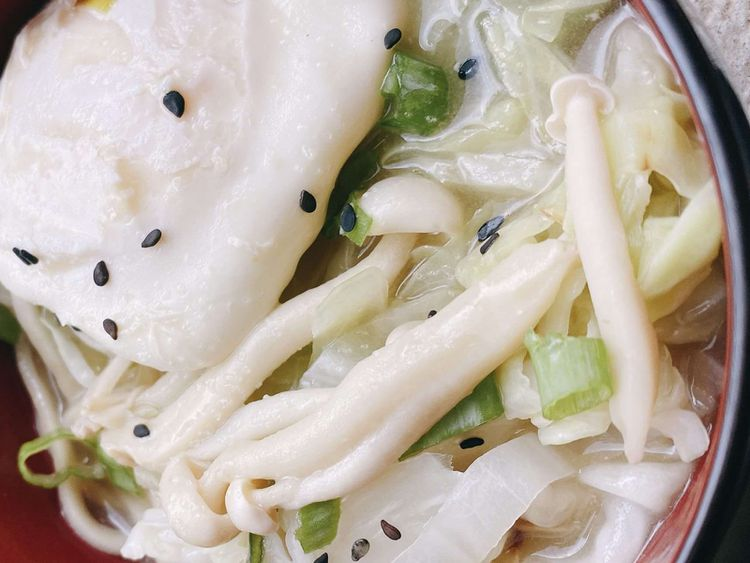

Miso Noodle Soup

Amazing Soup. Wow!
Ramen noodles, combined with miso paste,
a flavorful broth, and seasonings make a comforting dish.
Ingredients
- 2 large eggs
- 1 tablespoon sesame oil
- 2 teaspoons finely grated garlic
- 1/3 cup thinly sliced leek (green part)
- 1 1/2 cups thinly sliced cabbage
- 1/2 cup enoki mushrooms
- 4 ounces refrigerated fresh ramen noodles
- 3 cups of water
- 2 tablespoons of miso paste
- 1 tablespoons soy sauce
- 1 teaspoon black sesame seeds
- 2 tablespoons sliced green onion
Directions
- Crack eggs into a nonstick skillet over medium heat.
Cook until outer edges become opaque, about 1 minute.
Turn once; cook until whites are completely set, about 3 minutes; set eggs aside.
- Heat sesame oil in a saucepan over medium heat;
cook and stir ginger, garlic, leek, cabbage, and mushrooms until fragrant, about 1 minute.
Stir in miso paste; gradually whisk in water and bring to a boil.
Add in ramen noodles; reduce heat and simmer until noodles soften, about 3 minutes.
Season with soy sauce. Divide into two bowls; top each serving with egg.
Garnish with sesame seeds and scallions.